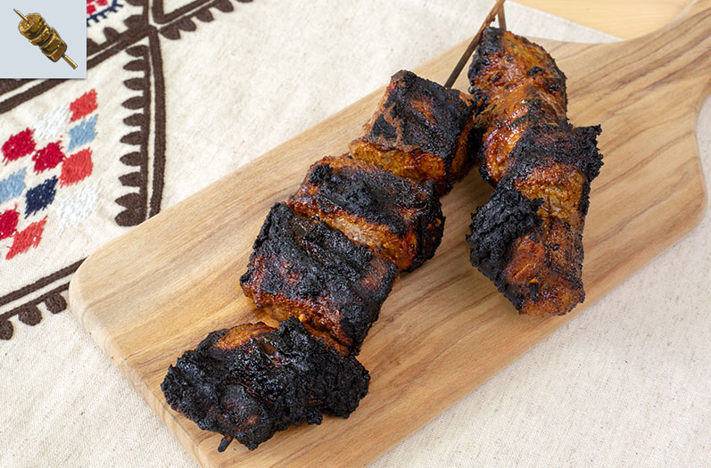

Spiced Meat Skewers

Description
Something basic and tasty, yet filling and savory! These Goron meat skewers will
leave a delicious taste and can be prepared quite easily!
Ingredients
Goron Spice
- 1 tsp black pepper
- 1/2 tsp cinnamon
- 3 tsp turmeric
- 2 tsp cumin
- 3 tsp paprika
- 1 tsp allspice
- 1 tsp cayenne pepper
- 1 tsp salt
Other
- 1/2 lb boneless beef ribs cut into large cubes
- 2 tbsp garlic paste
- 1/4 cup + 2 tbsp olive oil
- 1 tbsp worcestershire sauce
- 1 tbsp red wine vinegar
Steps
- Place all the spice ingredients in a bowl and mix together. Add the garlic
paste, olive oil, worcestershire sauce, and red wine vinegar. Mix well.
- Toss the marinade and the beef together in a bowl. Cover and refrigerate
for at least 1 hour to a maximum of 3 hours.
- Take your wooden skewers and let them sit in water for 30 minutes. This will
prevent them from burning on the grill. Pierce the beef with a wooden skewer.
Place 4 pieces of beef on each skewer. Preheat your grill.
- Once the grill is nice and hot, oil the grate to prevent the skewers from
sticking. Cook directly over the heat and turn the skewers every 3-4 minutes
until each side of the skewer has a nice char.